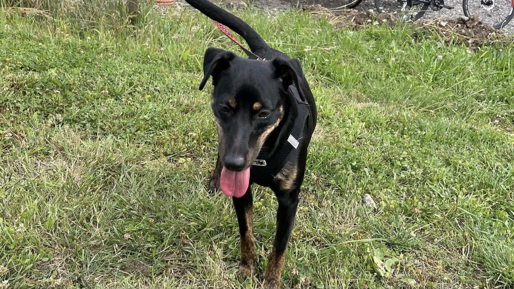

Mela
Mela to ok. 7-letni samiec średniej wielkości. Waży ok. 20 kg. Do schroniska trafił jako oddany przez właściciela. Ponoć lubi psy, a kotów nie zna. Niestety jest dość zasobowy, a więc wykazuje agresję przy rzeczach, których pilnuje. Na dworze skacze na np. rowerzystów. Gdy jest sam, to niszczy rzeczy. które ma w zasięgu, ale nie załatwia się w domu. Szukamy dla niego domu, w którym ktoś w pełni świadomie się nim zajmie i popracuje nad jego problemami.
| Choroby: | brak |
|---|---|
| Płeć | samica [kastrowana] |
| W schronisku od | 2023-11-11 |
| Szczepienia/ odpchlenie/ chipowanie: | Tak |
